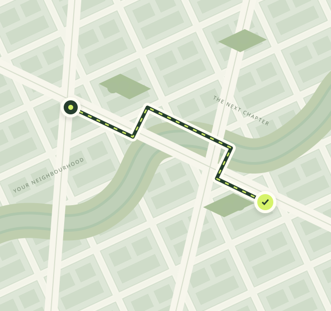

01WHEN IT MATTERS
Same-day delivery
For the forgot-it-at-home moments and the just-in-time essentials. Plan an urgent collection and drop-off.
Your parcel has somewhere to be.
Let's make getting it there feel effortless.

Some things can't wait. Others work better with a plan. Explore the delivery options we're building around your day.
For the forgot-it-at-home moments and the just-in-time essentials. Plan an urgent collection and drop-off.
A little planning goes a long way. Prepare your route and parcel details before arranging a collection.
From your first customer order to your daily dispatch list. Bring your delivery routine into one workspace.
Service concepts shown. Coverage, collection times and pricing will be confirmed when operations launch.
A clearer view of what happens next, from the first detail to the final handover.
Explore the customer deskWhere from, where to and what's inside. Put your delivery plan together in a few simple fields.
A LITTLE PREPARATION GOES A LONG WAY.Once live, review an issued quote and confirm your booking in the customer desk. No surprises at checkout.
COMING WITH THE LIVE SERVICE.The planned workspace brings shipment events and private proof of delivery together after activation.
FROM COLLECTION TO THE FINAL HANDOVER.Your deliveries are part of your reputation. We're building a workspace that gives every parcel the attention your business puts into it.
A little clarity for the road ahead.
Franks24 Dispatch is in preview. You can create a delivery plan here and explore the customer desk. Live quotes, confirmed collections, bookings and payments are not available yet.
Coverage areas have not been confirmed for launch. You can enter a suburb or city to prepare a plan, but this does not confirm service availability for that route.
Live pricing is not available. When the service opens, review an issued quote for your route, parcel and service before confirming a booking. This site does not calculate fares.
The planned customer desk will show confirmed shipment events and private proof of delivery. Live tracking and GPS are not connected on this site. No tracking status is invented.
Use the driver preview or the internal dispatcher preview. Operational access requires authorised approval. Creating a delivery plan does not grant driver or staff access.
This is a new Franks24 Dispatch website preview. Delivery plans stay in your browser session and are not sent to an operator. Live operations, Google sign-in acceptance, service coverage and delivery policies still require launch approval. Read the draft delivery policies ↗